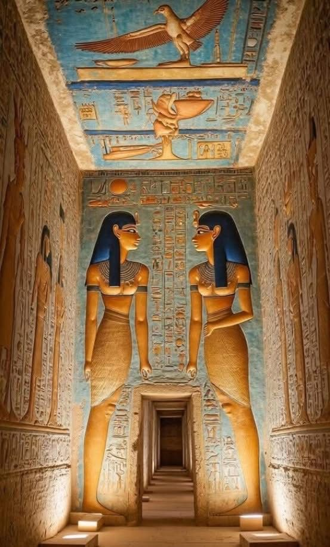

✦ Philae Temple
Standing gracefully on the island of Agilkia, Philae Temple was built
in honor of the goddess Isis. Surrounded by the calm waters of the Nile,
it is one of the last temples built in the classical Egyptian style —
a place where ancient faith and breathtaking beauty meet.
✦ The Golden King
The mask of Tutankhamun is one of the greatest treasures ever discovered.
Crafted from solid gold and inlaid with lapis lazuli, it has guarded
the young pharaoh's face for over 3,000 years. Found in 1922 by Howard Carter,
it remains a symbol of Egypt's eternal glory.
✦ Abu Simbel Temple
Carved directly into the mountain by Ramesses II over 3,200 years ago,
Abu Simbel stands as a monument to power and devotion.
Twice a year, sunlight penetrates deep into the temple to illuminate
the faces of the gods — a marvel of ancient engineering still celebrated today.

✦ Sacred Scripts
Hieroglyphs were the sacred writing system of ancient Egypt,
used for over 3,500 years. Each symbol carried deep meaning —
from prayers to the gods, to records of great battles and royal decrees.
The sun disk above radiates golden rays, a tribute to Aten, the god of light.
✦ Hall of the Goddesses
Deep within an ancient tomb, painted walls tell the story of Isis and Nephthys —
two of Egypt's most powerful goddesses. Their vivid colors have survived
thousands of years in darkness, preserving rituals meant to guide
the soul safely into the afterlife.
✦ Temple by the Nile
The Nile River is the lifeblood of Egypt — ancient and modern alike.
Along its banks, magnificent temples were raised to honor the gods
who blessed Egypt with floods that brought fertile soil every year.
Without the Nile, the great civilization of Egypt could never have existed.
✦ Aswan — Where the Nile Tells Its Story
Aswan is where Egypt slows down and breathes. The Nile here is wide, calm,
and impossibly blue — a felucca glides silently across the water as golden rocks rise
from the riverbanks.
This is not just a city, it is a feeling — ancient, peaceful, and eternal.
Aswan has been a gateway between Egypt and Africa for thousands of years,
a place where traders, pharaohs, and travelers all stopped to rest by the river.
✦ Isis — The Winged Goddess
Painted on the walls of a royal tomb, this image of Isis spreading her magnificent wings
has survived thousands of years. Isis was the goddess of magic, healing, and protection —
her wings were believed to shelter the souls of the dead on their journey to the afterlife.
Every feather was painted with devotion, every color chosen with sacred meaning.
✦ The Pyramid & The Sphinx
As the sun crowns the peak of the Great Pyramid, the Sphinx watches in silence below —
guardian of secrets buried for millennia. Built over 4,500 years ago,
the pyramids of Giza are the only wonder of the ancient world still standing.
No photograph, no words, can truly prepare you for the moment you stand before them.
✦ Egypt Honored Love
In ancient Egypt, love was not just a feeling — it was sacred.
The gods themselves loved deeply: Isis searched the entire world to find Osiris,
and their story became the greatest love tale ever told.
The Eye of Horus painted on these intertwined arms is a symbol of protection —
to love someone in Egypt meant to guard their soul, in this life and beyond.
.jpg)
.jpg)
.jpg)
.jpg)
.jpg)
.jpg)
.jpg)
.jpg)